You have the option to configure subprocess activities by assigning a process to a subprocess activity or by creating them from activity networks.
To define an activity as a subprocess, select Subprocess
as the type of the activity. In the properties dialog, select the desired process from
list of existing process definitions.
If you select
Display Imported Model Elements as Groups check box,
the references for the referenced process definitions are displayed.
It also groups local and referenced elements.
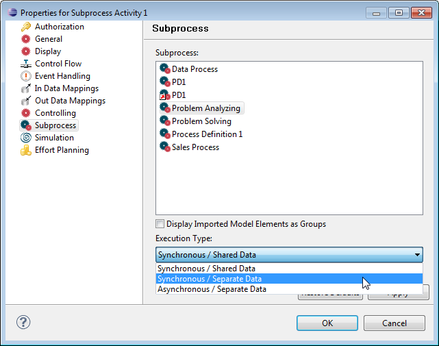
Figure: Configuring a Subprocess
If you assign a process to a subprocess activity, you have the option to give the activity the name of this process. Please refer to the section Naming the subprocess for details.
You can configure your subprocesses with the following three different execution types:
Synchronous subprocesses with shared data "inherit" data from their super process. Hence, you do not have to pass data to or retrieve data from synchronous subprocesses explicitly by data mappings.
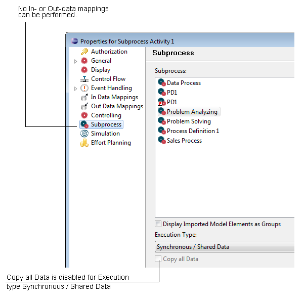
Figure: Subprocess Properties Dialog with Execution Type Synchronous Shared Data
Subprocesses being invoked with the option synchronous, separate data will not have access to data values bound to the scope of their parent process instance. In the activities properties dialog you can enable or disable the option Copy all Data to determine the type of data handling.
With this option disabled the invoked process instance scope will initially contain no data value. Passing data between the invoking process instance and back has to be explicitly performed with IN or OUT data mappings.
Having the option enabled, a copy of the value of any user-defined data existing in the parent process instance scope at invocation time will be created in the invoked process instance scope. You can still work with OUT data mappings, but IN data mappings are disabled.
So, in subprocess invocation:
The modeler just does not allow to add additional mappings once Copy All Data is selected.
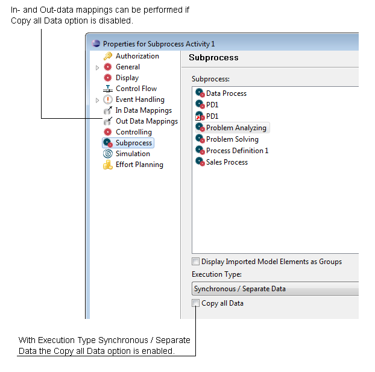
Figure: Subprocess Properties Dialog with Execution Type Synchronous Separate Data
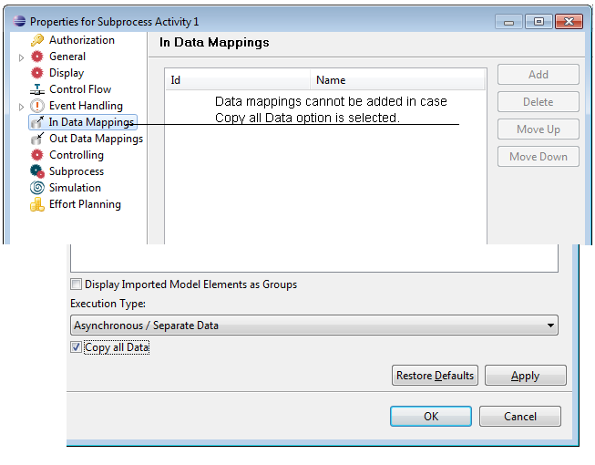
Figure: Execution Type Synchronous Separate with Copy all Data enabled.
Generally, any root process instance and any process instance invoked with the Synchronous Separate option will function as scope for data values. Any process instance will have exactly one associated scope, where scope process instances are their own scope, and non-scope process instances have the same scope as their parent process instance.
For details on the Copy Data semantics, For more information, please refer to chapter Data Copy and Mapping Semantics of the Stardust Concepts handbook.
Asynchronous subprocesses receive a copy of the super process data (separate data). The subprocess is detached from the super process and becomes a root process instead of scope process.
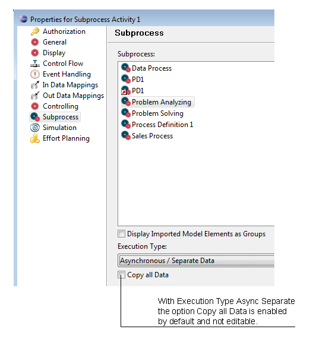
Figure: Subprocess Properties Dialog with Execution Type Asynchronous Separate Data
Switching between the options will not delete existing data mappings if the selected combination does not support them but a succeeding warning is displayed if the Copy Process Data checkbox is selected and also the data mappings are provided.
If you assign a process to a subprocess activity, you have the option to give the activity the name of this process. In this case you have to set the preferences option Auto Name Generation of Subprocess Activities to enabled, as described in the Setting Process Manager Preferences section of the Stardust Process Workbench chapter. If option Enable Auto ID Generation is enabled in the Process Manager preferences, also the Id of the activity is changing according to the process name as described in the Auto Id Generation section.
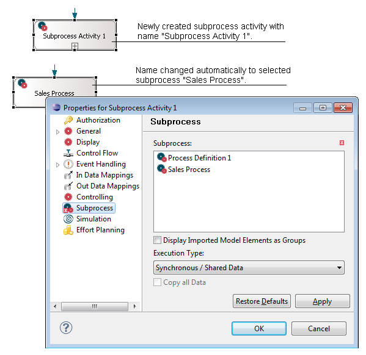
Figure: Automatic Name Generation of a Subprocess
In the Stardust modeler you can create subprocesses from a selected activity network. Selected activities will be replaced by a subprocess activity in the source process. Additional process definitions will be created containing all dependent elements. The connections between organizations and other participants are deleted.
A subprocess can only be created if it follows these rules:
Select the activities to be replaced , e.g. by holding the Ctrl key and clicking on them. Right-click and select Create Subprocess.
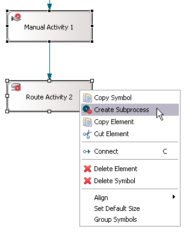
Figure: Create a Subprocess from the selected Activities.
A new activity with subprocess implementation is created:
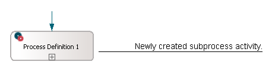
Figure: A new Subprocess Activity is created.
Also a new process definition is created containing all the selected activities and according transitions.
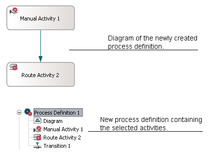
Figure: A new Process Definition is created.
If the source mouse location is a lane, the subprocess activity is also created in this lane.
In case you create a subprocess from an activity network with activities having symbols also in other diagrams, the symbols are removed from these diagrams as well. This applies also for other elements which are moved to the new process definition.
The subprocess is created automatically when a process interface is defined in one model and referenced in another model, through file connection, and its process definition is imported via drag-n-drop gesture.
The Show Subprocess Diagram option is available in two cases.
The Show Subprocess Diagram option is available at the subprocess level when you associate any process definition of the same model with that subprocess. To view this option, perform the following steps:
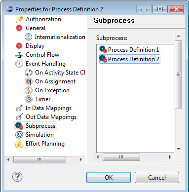
Figure: Subprocess - Assign Process Definition
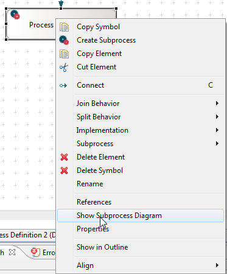
Figure: Local Subprocess - Show Subprocess Diagram
The Show Subprocess Diagram option is available at the subprocess activity of consumer model. To view this option, perform the following steps:
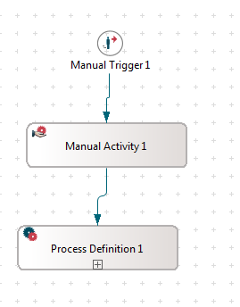
Figure: Subprocess - Created via drag-n-drop
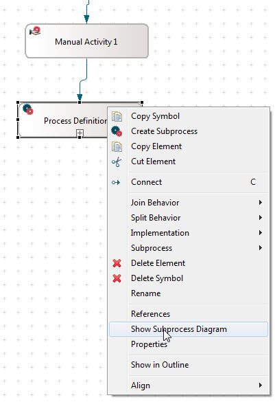
Figure: Show Subprocess Diagram